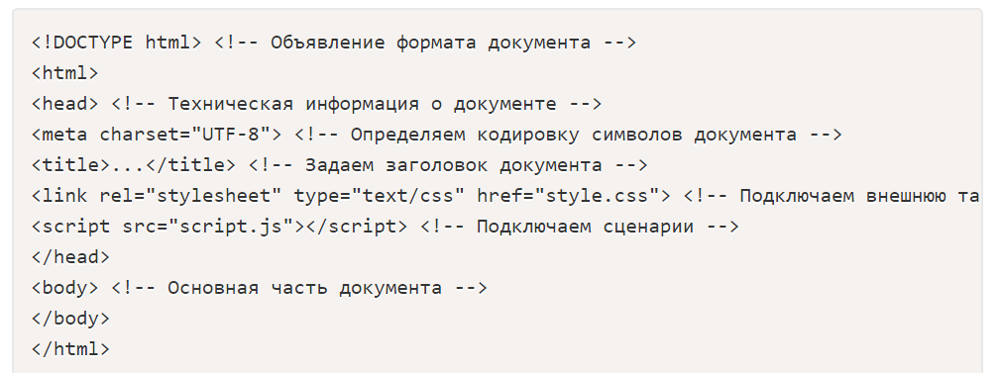
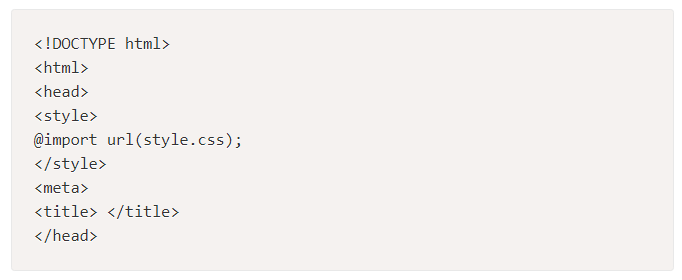

Основы HTML
HTML-документ — это обычный текстовый документ, может быть создан как в обычном текстовом редакторе (Блокнот), так и в специализированном, с подсветкой кода (Notepad++, Visual Studio Code и т.п.). HTML-документ имеет расширение .html.
HTML-документ состоит из дерева HTML-элементов и текста. Каждый элемент обозначается в исходном документе начальным (открывающим) и конечным (закрывающим) тегом (за редким исключением).
Начальный тег показывает, где начинается элемент, конечный — где заканчивается. Закрывающий тег образуется путем добавления слэша / перед именем тега, вот пример открыв-ся и закрыв-ся тега:<имя тега>…</имя тега>. Между начальным и закрывающим тегами находится содержимое тега — контент.
Одиночные теги не могут хранить в себе содержимого напрямую, оно прописывается как значение атрибута, например, тег <input type="button" value="Кнопка"> создаст кнопку с текстом "Кнопка" внутри.
Теги могут вкладываться друг в друга, например, <p><i>Текст</i></p>. При вложении следует соблюдать порядок их закрытия (принцип «матрёшки»), например, следующая запись будет неверной: <p<i>Текст</p></i>.
HTML-элементы могут иметь атрибуты (глобальные, применяемые для всех HTML-элементов, и собственные). Атрибуты прописываются в открывающем теге элемента и содержат имя и значение, указываемые в формате имя атрибута="значение". Атрибуты позволяют изменять свойства и поведение элемента, для которого они заданы.
Каждому элементу можно присвоить несколько значений "class" и только одно значение "id". Множественные значения "class" записываются через пробел, <div class="nav top">. Значения "class" и "id" должны состоять только из букв, цифр, дефисов и нижних подчеркиваний и должны начинаться только с букв или цифр.
Браузер просматривает (интерпретирует) HTML-документ, выстраивая его структуру (DOM) и отображая ее в соответствии с инструкциями, включенными в этот файл (таблицы стилей, скрипты). Если разметка правильная, то в окне браузера будет отображена HTML-страница, содержащая HTML-элементы — заголовки, таблицы, изображения и т.д.
Процесс интерпретации (парсинг) начинается прежде, чем веб-страница полностью загружена в браузер. Браузеры обрабатывают HTML-документы последовательно, с самого начала, при этом обрабатывая CSS и соотнося таблицы стилей с элементами страницы.
Структура HTML-документа
Язык HTML следует правилам, которые содержатся в файле объявления типа документа (Document Type Definition, или DTD). DTD представляет собой XML-документ, определяющий, какие теги, атрибуты и их значения действительны для конкретного типа HTML. Для каждой версии HTML есть свой DTD.
DOCTYPE отвечает за корректное отображение веб-страницы браузером. DOCTYPE определяет не только версию HTML (например, html), но и соответствующий DTD-файл в Интернете.
Элементы, находящиеся внутри тега <html>, образуют дерево документа, так называемую объектную модель документа, DOM (document object model). При этом элемент <html> является корневым элементом.

Чтобы разобраться во взаимодействии элементов веб-страницы, необходимо рассмотреть так называемые «родственные отношения» между элементами. Отношения между множественными вложенными элементами подразделяются на родительские, дочерние и сестринские.
Предок — элемент, который заключает в себе другие элементы. На рисунке предком для всех элементов является <html>. В то же время элемент <body> является предком для всех содержащихся в нем тегов: <h1>, <p>, <span>, <nav> и т.д.
Потомок — элемент, расположенный внутри одного или более типов элементов. Например, <body> является потомком <html>, а элемент <p> является потомком одновременно для <body> и <html>.
Родительский элемент — элемент, связанный с другими элементами более низкого уровня, и находящийся на дереве выше их. На рисунке <html> является родительским только для <head> и <body>. Тег <p> является родительским только для <span>.
Дочерний элемент — элемент, непосредственно подчиненный другому элементу более высокого уровня. На рисунке 1 только элементы <h1>, <h2>, <p> и <nav> являются дочерними по отношению к <body>.
Сестринский элемент — элемент, имеющий общий родительский элемент с рассматриваемым, так называемые элементы одного уровня. На рисунке 1 <head> и <body> — элементы одного уровня, так же как и элементы <h1>, <h2> и <p> являются между собой сестринскими.
Элемент <html>
Является корневым элементом документа. Все остальные элементы содержатся внутри тегов <html>...</html>. Все, что находится за пределами тегов, не воспринимается браузером как код HTML и никак им не обрабатывается. Для элемента доступны атрибуты manifest и xmlns, а также глобальные атрибуты. (Ссылки на все HTML теги и глобальные атрибуты, предоставленны в конце статьи)
| Атрибут | Описание, принимаемое значение |
|---|---|
| manifest | С помощью значения атрибута указывается путь к документу кэша манифеста, например: <html manifest="about_company.appcache"> |
Элемент <head>
Раздел <head>...</head> содержит техническую информацию о странице: заголовок, описание, ключевые слова для поисковых машин, кодировку и т.д. Введенная в нем информация не отображается в окне браузера, однако содержит данные, которые указывают браузеру, как следует обрабатывать страницу. Для элемента доступны глобальные атрибуты.
Элемент <title>
Обязательным тегом раздела <head> является тег <title>. Текст, размещенный внутри этого тега, отображается в строке заголовка веб-браузера. Длина заголовка должна быть не более 60 символов, чтобы полностью поместиться в заголовке. Текст заголовка должен содержать максимально полное описание содержимого веб-страницы. Для элемента доступны глобальные атрибуты.
Элемент <meta>
Необязательным тегом раздела <head> является одинарный тег <meta>. С его помощью можно задать описание содержимого страницы и ключевые слова для поисковых машин, автора HTML-документа и прочие свойства метаданных. Элемент <head> может содержать несколько элементов <meta>, потому что в зависимости от используемых атрибутов они несут различную информацию.
<meta name="description" content="Описание содержимого страницы">
<meta name="keywords" content="Ключевые слова через запятую">
Описание содержимого страницы и ключевые слова одновременно можно указывать на нескольких языках, например, на русском и английском:
<meta name="description" lang="ru" content="Описание содержимого страницы"><meta name="description" lang="en" content="Description">
<meta name="keywords" lang="ru" content="Ключевые слова через запятую">
<meta name="keywords" lang="en" content="Keywords">
| Атрибут | Описание, принимаемое значение |
|---|---|
| charset | Указывает кодировку символов для текущего HTML-документа: <meta charset="UTF-8"> |
| content | Содержит произвольный текст, который определяет значение, ассоциируемое с атрибутом http-equiv или name, в зависимости от их значения. |
| http-equiv | Контролирует действия браузера на данной веб-странице (эквивалент HTTP заголовков). При отображении страницы браузер будет следовать инструкциям, заданным в атрибуте: default-style указывает предпочтительный стиль для использования на странице. Атрибут content должен содержать идентификатор элемента <link>, который ссылается на таблицу стилей CSS, или идентификатор элемента <style>, содержащего таблицу стилей. refresh указывает время в секундах до перезагрузки страницы или время до перенаправления на другую страницу, если в атрибуте content после указания времени идет строка "url=адрес_страницы". Автоматическая перезагрузка страницы через заданный промежуток времени, в данном примере, через 30 секунд: <meta http-equiv="refresh" content="30"> Если необходимо сразу перебросить посетителя на другую страницу, то можно указать URL-адрес в параметре url: <meta http-equiv="refresh" content="0; url=http://mail.ru/"> |
| name | Ассоциируется со значением, содержащемся в атрибуте content. Не должен использоваться в случае, если для элемента уже заданы атрибуты http-equiv, charset или itemprop. application-name указывает название веб-приложения, используемого на странице. author указывает имя автора документа в свободном формате. description определяет краткое описание к содержимому страницы, например: <meta name="description" content="Описание содержимого страницы"> generator указывает один из пакетов программного обеспечения, используемого для создания документа, например: <meta name="generator" content="WordPress 4.0"> . keywords содержит список ключевых слов, разделенных запятыми, соответствующих содержимому страницы, например: <meta name="keywords" content="Ключевые слова через запятую">. Также атрибут name может принимать следующие значения из расширенной спецификации, такие как creator, googlebot, publisher, robots, slurp, viewport, хотя ни одно из них еще не было официально принято. |
Элемент <style>
Внутри этого элемента задаются стили, которые используются на странице. Для задания стилей в HTML-документе используется язык CSS. Таких элементов на странице может быть несколько. Для элемента доступны атрибуты media, scoped, type, а также глобальные атрибуты. Внутрь этого элемента можно записывать код форматирования как самих элементов веб-страницы, так и веб-страницы целиком.
<style type="text/css">
.paper {
width: 200px;
height: 300px;
background-color: #ef4444;
color: #666666;
}
Чтобы подключить к элементу заданный стиль, необходимо через атрибут class (или id) присвоить элементу соответствующее название:
<div class="paper"> ... </div>
CSS-код можно встраивать непосредственно в элемент разметки в виде значение атрибута style, например:
<p style="color: #666666; background-color: #ef4444; padding: 20px;">
| Атрибут | Описание, принимаемое значение |
|---|---|
| media | Определяет, для какого типа устройства предназначены те или иные каскадные таблицы стилей. Внутри таблицы стилей CSS специфичные правила для определенных устройств прописываются с помощью media query. |
| nonce | Генерируемая случайным образом на сервере строковая переменная, которая устанавливает правила использования встроенных стилей с целью защиты контента. Значение атрибута — строка текста. |
| type | Определяет MIME-тип подключаемого файла со стилями, в данном случае <style type="text/css">. |
Элемент <link>
Задать стили для документа можно также при помощи другого способа — записать их в отдельный файл с расширением .css, например, style.css. Подключить файл со стилями к веб-странице можно двумя способами: через директиву @import url

с использованием элемента <link>. Элемент не требует закрывающего тега. Данный элемент определяет отношение между текущей страницей и другими документами. Таких элементов на странице может быть несколько. Запись будет иметь следующий вид:
<link rel="stylesheet" href="style.css" type="text/css">
Для элемента доступны атрибуты href, hreflang, media, rel, type, а также глобальные атрибуты.
| Атрибут | Описание, принимаемое значение |
|---|---|
| crossorigin | Указывает, должен ли использоваться CORS (технология браузеров, которая позволяет предоставить веб-странице доступ к ресурсам другого домена) при извлечении изображения с сайта. anonymous — в кросс-доменный запрос браузер автоматически добавляет заголовок Origin, содержащий имя домена, с которого осуществлён запрос. Если сервер не ответит CORS-заголовком Access-Control-Allow-Origin: * (или имя домена вместо звёздочки), то загрузка изображения будет заблокирована. use-credentials — если сервер не предоставляет учётные данные с помощью Access-Control-Allow-Credentials: true, то загрузка изображения будет заблокирована. |
| href | Основной атрибут тега, в качестве значения выступает путь к файлу со стилями. |
| hreflang | Определяет язык текста в документе, на который идет ссылка. |
| media | Определяет тип устройства, к которым должен быть применен ресурс ссылки. |
| nonce | Генерируемая случайным образом на сервере строковая переменная, которая устанавливает правила использования встроенных стилей с целью защиты контента. Значение атрибута — строка текста. |
| rel | Атрибут определяет отношения между текущим документом и документом, на который идет ссылка. alternate — ссылка на тот же документ, но в другом формате (например, страницы для печати, перевод, зеркало, лента в формате RSS или Atom), <link rel="alternate stylesheet" type="text/css" title="small_font" href="small-font.css">. <link rel="alternate" type="application/rss+xml" title="my_RSS" href="index.xml"> <link rel="alternate" type="application/atom+xml" title="News" href="/atom.xml?type=news"> archives — указывает на то, что документ по ссылке представляет исторический интерес. Ссылка может указывать на коллекцию записей, документов и других материалов. author ссылка на страницу об авторе документа или на страницу с контактными данными автора. bookmark ссылка на ближайшего предка статьи, являющегося связующим звеном, или на раздел статьи, наиболее тесно связанных с элементом, если нет предка. external используется для указания того, что страница на которую ведет ссылка не являются частью данного сайта. first указывает ссылку, ведущую на первый документ из последовательности документов. help ссылка на документ со справкой. icon определяет путь к иконке, которая будет использована для текущего документа. last указывает ссылку, ведущую на последний документ в последовательности документов. license ссылка на сведения об авторских правах для документа. next указывает, что этот документ является частью серии, и что ссылка ведет на следующий документ в этой серии. <link rel="next" href="/next.html" type="text/html" title="Следующая страница"> nofollow указывает на то, что ссылка не одобрена автором страницы или что ссылка носит коммерческий характер. noreferrer указывает на то, что заголовок запроса клиента, содержащий url источника запроса, не должен передаваться при переходе по ссылке. pingback указывает адрес пингбэк-сервера, что дает возможность для блога автоматически оповещать сайты, ссылающиеся на него. prefetch указывает, что следует заранее кэшировать файл, на который ведет ссылка. prev указывает, что этот документ является частью серии, и что ссылка ведет на предыдущий документ в этой серии. <link rel="prev" href="/next.html" type="text/html" title="Предыдущая страница"> search указывает, что ссылаемый документ содержит интерфейс поиска и связанных с ним ресурсов. sidebar указывает, что ссылаемый документ, если это возможно, будет показан в дополнительном контексте браузера, и некоторые браузеры при щелчке по гиперссылке открывают окно для добавления ссылки в панель закладок. stylesheet ссылка на внешний файл, который будет использоваться в качестве таблицы стилей для данного документа. tag указывает на то, что метка, на которую ведет гиперссылка, относится к данному документу. up указывает, что страница является частью иерархической структуры, и что гиперссылка ведет на более высокий уровень ресурса в структуре. |
| sizes | Указывает размер иконок для визуального отображения. Атрибут sizes используется только совместно с rel="icon", и может принимать следующий значения: ширинахвысота — определяет список размеров, разделенных пробелами, каждый размер должен быть в формате — ширинахвысота (размеры иконки задаются в пикселях), например: <link rel="icon" href="favicon.png" sizes="16x16 32х32" type="image/png">; any — иконка может масштабироваться до любого размера. |
| title | Определяет заголовок ссылки или название набора альтернативных таблиц стилей. Значение атрибута — текст. |
| type | Определяет MIME-тип документа, на который идет ссылка. В данном случае он принимает значение "text/css". |
Элемент <script>
Элемент <script> позволяет присоединять к документу различные сценарии. Закрывающий тег обязателен, при этом текст сценария может располагаться либо внутри этого элемента, либо во внешнем файле. Если текст сценария расположен во внешнем файле, то он подключается с помощью атрибутов элемента. Для элемента доступны атрибуты async, charset, defer, src, type, а также глобальные атрибуты.
| Атрибут | Описание, принимаемое значение |
|---|---|
| async | Атрибут указывает на то, что сценарий будет выполняться асинхронно с остальной частью страницы (сценарий начнет выполняться одновременно с загрузкой страницы). |
| charset | Определяет кодировку символов |
| crossorigin | Определяет, будет ли использоваться CORS при загрузке внешних скриптов (с использованием атрибута src). anonymous — перед загрузкой скрипта в кросс-доменный запрос браузер автоматически добавляет заголовок Origin, при этом не передаются параметры доступа (cookie, сертификат X.509, логин/пароль для базовой аутентификации по HTTP). Если в ответе сервера отсутствует заголовок Access-Control-Allow-Origin: имя домена, скрипт не будет загружен. use-credentials — перед загрузкой скрипта в кросс-доменный запрос браузер автоматически добавляет заголовок Origin с указанием параметров доступа (cookie, SSL-сертификат или пары логин/пароль). Если в ответе сервера отсутствует заголовок Access-Control-Allow-Credentials: true, скрипт не будет загружен. |
| defer | Интерпретация сценариев откладывается до окончания отображения документа на устройстве пользователя. |
| nonce | Обеспечивает безопасность, защищая от атак с внедрением межсайтового скриптинга (XSS, cross site scripting). Устанавливает правила использования встроенных скриптов с помощью nonce-значений и хэшей. Во время рендеринга страницы браузер для каждого инлайн-скрипта вычисляет хэши и сравнивает с перечисленными в CSP. Загрузка с ресурсов, не входящих в «белый список», блокируется. |
| src | Указывает на месторасположение файла со сценарием, значение атрибута — это url файла, содержащего JavaScript-программу. |
| type | Используются для объявления языка сценария, использованного при составлении содержимого тега. |
| onafterprint | Событие, срабатывающее после отправки страницы на печать или после закрытия окна печати. |
| onbeforeprint | Событие, срабатывающее перед отправкой страницы на печать. |
| onbeforeunload | Событие срабатывает, когда посетитель инициировал переход на другую страницу или нажал «закрыть окно». Позволяет отображать сообщение в диалоговом окне подтверждения, чтобы сообщить пользователю, хочет ли он остаться или покинуть текущую страницу. |
| onhashchange | Событие срабатывает, когда меняется hash-часть URL, например, когда пользователь перейдет с адреса example.domain/test.aspx#page1 на example.domain/test.aspx#page2. |
| onmessage | Событие происходит, когда сообщение получено через источник события. |
| onoffline | Событие вызывается браузером в том случае, когда браузер определит, что соединение с интернет пропало. |
| ononline | Событие вызывается браузером в том случае, когда соединение с интернет возобновилось. |
| onpagehide | Событие происходит, когда пользователь покидает страницу посредством навигации, например, нажав на ссылку, обновив страницу, заполнив форму и т.д. |
| onpageshow | Событие происходит, когда пользователь переходит на веб-страницу, после события onload. |
| onunload | Событие срабатывает если страница не загрузилась по каким-либо причинам, либо при закрытии окна браузера. |
Элемент <body>
В этом разделе располагается все содержимое документа. Для элемента доступны глобальные атрибуты.